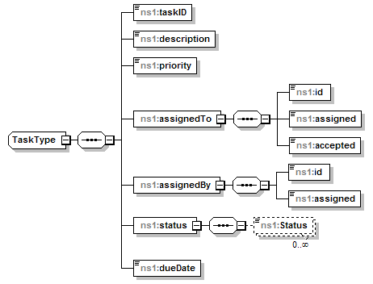

@Endpoint @Transactional public class TaskingServiceEndpoint extends Object implements com.saic.uicds.core.infrastructure.util.ServiceNamespaces
The TaskType is defined as the following data structure:

The Tasking Service manages UICDS work products of type "Tasking".
NS_AgreementService, NS_AlertService, NS_BroadcastService, NS_DirectoryService, NS_IAPService, NS_Incident, NS_IncidentCommandStructureService, NS_IncidentManagementService, NS_InterestGroupService, NS_LEITSCService, NS_LoggingService, NS_MapService, NS_NotificationService, NS_OasisCAP, NS_ProfileService, NS_ResourceInstanceService, NS_ResourceManagementService, NS_ResourceProfileService, NS_SensorService, NS_TaskingService, NS_WorkProductService| Constructor and Description |
|---|
TaskingServiceEndpoint() |
| Modifier and Type | Method and Description |
|---|---|
org.uicds.taskingService.CreateTaskListResponseDocument |
createTaskList(org.uicds.taskingService.CreateTaskListRequestDocument requestDoc)
Creates a new task list for an entity and associates it with an incident.
|
org.uicds.taskingService.GetTaskListResponseDocument |
getTaskList(org.uicds.taskingService.GetTaskListRequestDocument requestDoc)
Gets the task list with the input work product identification.
|
org.uicds.taskingService.GetTaskListByIdResponseDocument |
getTaskListByEntityIdAndIncidentId(org.uicds.taskingService.GetTaskListByIdRequestDocument requestDoc)
Gets the incident task list for an entity and incident.
|
org.uicds.taskingService.UpdateTaskListResponseDocument |
updateTaskList(org.uicds.taskingService.UpdateTaskListRequestDocument requestDoc)
Updates the incident task list with the input work product identification.
|
@PayloadRoot(namespace="http://uicds.org/TaskingService",
localPart="CreateTaskListRequest")
public org.uicds.taskingService.CreateTaskListResponseDocument createTaskList(org.uicds.taskingService.CreateTaskListRequestDocument requestDoc)
CreateTaskListRequestDocument - @PayloadRoot(namespace="http://uicds.org/TaskingService",
localPart="UpdateTaskListRequest")
public org.uicds.taskingService.UpdateTaskListResponseDocument updateTaskList(org.uicds.taskingService.UpdateTaskListRequestDocument requestDoc)
UpdateTaskListRequestDocument - @PayloadRoot(namespace="http://uicds.org/TaskingService",
localPart="GetTaskListRequest")
public org.uicds.taskingService.GetTaskListResponseDocument getTaskList(org.uicds.taskingService.GetTaskListRequestDocument requestDoc)
GetTaskListRequestDocument - @PayloadRoot(namespace="http://uicds.org/TaskingService",
localPart="GetTaskListByIdRequest")
public org.uicds.taskingService.GetTaskListByIdResponseDocument getTaskListByEntityIdAndIncidentId(org.uicds.taskingService.GetTaskListByIdRequestDocument requestDoc)
GetTaskListByIdRequestDocument - Copyright © 2012. All Rights Reserved.